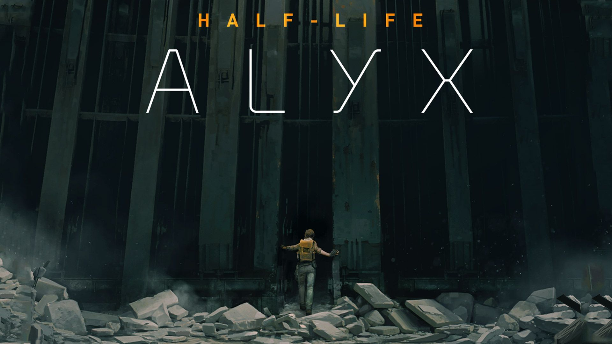
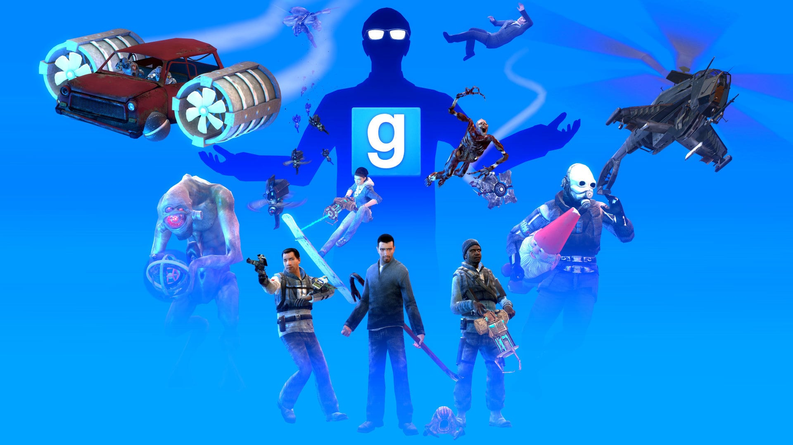
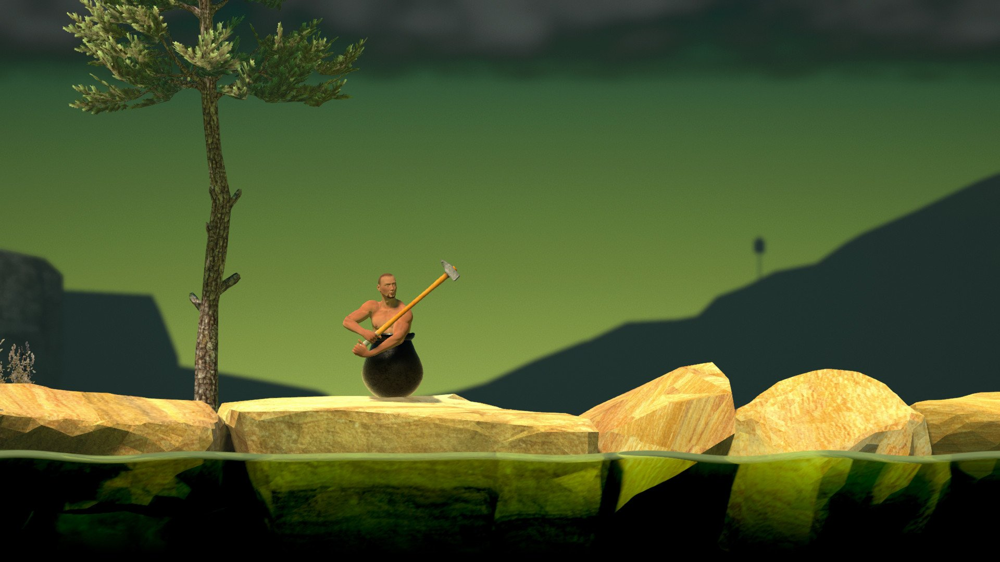
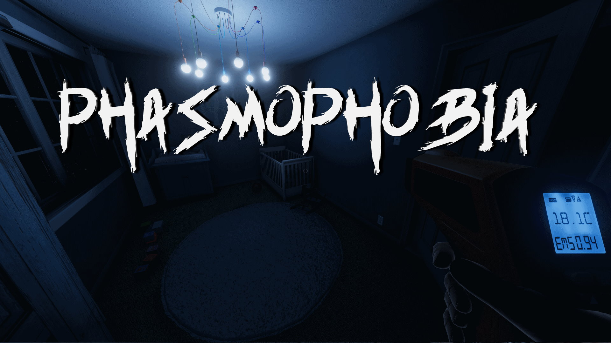
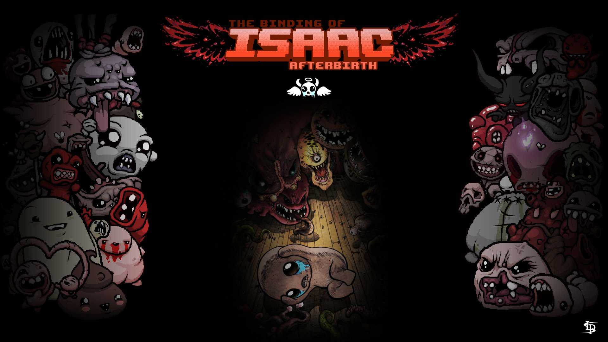

Half-Life: Alyx
Jugando como Alyx Vance, eres la única oportunidad de supervivencia de la humanidad. El
control de la Alianza sobre el planeta desde el incidente de Black Mesa solo se ha fortalecido a medida
que acorralan a los habitantes que quedan en las ciudades. Entre ellos se encuentran algunos de los
mejores científicos de la Tierra: tú y tu padre, el Dr. Eli Vance.

Garry's Mod
Garry's Mod es un entorno que te permite jugar libremente con el motor físico. Al contrario
que en la mayoría de juegos, no hay metas u objetivos predeterminados. Te proporcionamos las
herramientas y te damos libertad para jugar.

Getting Over It with Bennett Foddy
Getting Over It with Bennett Foddy es un juego de escalada de castigo, un homenaje al
clásico B-Game de 2002 de Jazzuo 'Senderismo sexy'. Mueves el martillo con el ratón y eso es todo. Con
la práctica, podrá saltar, balancearse, trepar y volar. Grandes misterios y una maravillosa recompensa
esperan a los maestros senderistas que llegan a la cima de la montaña.

Phasmophobia
Phasmophobia es un horror psicológico cooperativo en línea para 4 jugadores en el que usted
y los miembros de su equipo de investigadores paranormales entrarán en lugares encantados llenos de
actividad paranormal y reunirán tanta evidencia de lo paranormal como puedan. Utilizará su equipo de
caza de fantasmas para buscar y registrar evidencia de cualquier fantasma que esté rondando el lugar
para venderlo a un equipo de eliminación de fantasmas.

The Binding of Isaac
Cuando la madre de Isaac comienza a escuchar la voz de Dios exigiendo que se haga un
sacrificio para demostrar su fe, Isaac escapa al sótano y se enfrenta a una multitud de enemigos
trastornados, hermanos y hermanas perdidos, sus miedos y, finalmente, su madre.
Danganronpa V3: Killing Harmony
Te damos la bienvenida a un nuevo mundo de Danganronpa: prepárate para el episodio más
espectacular y emocionante hasta ahora. En un ambiente de “psicópatas modernos”, un nuevo elenco de 16
personajes se encuentran secuestrados y encarcelados en una escuela. En el interior, algunos matarán,
algunos morirán y algunos serán castigados.